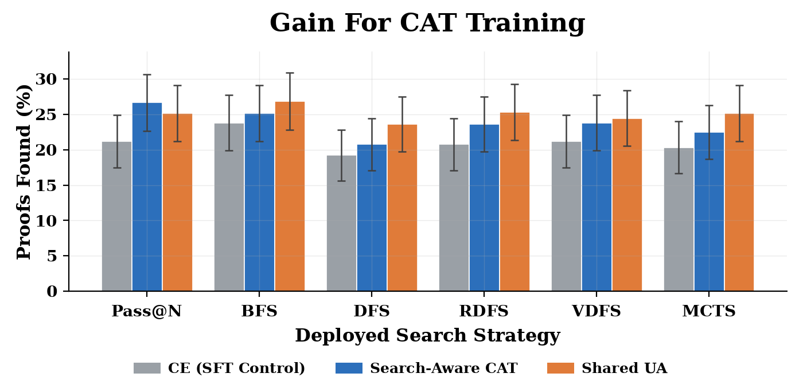
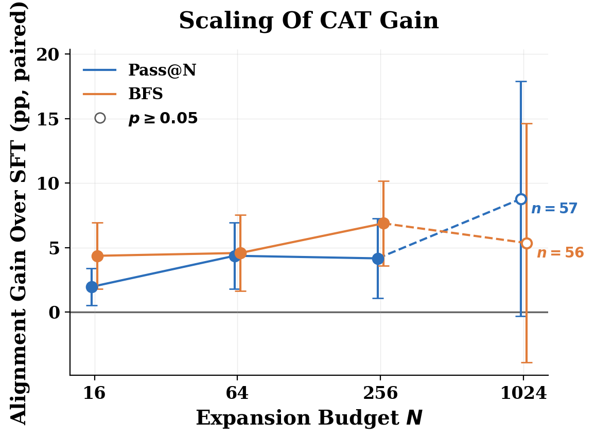

Trains and evaluates LLM proof-step generators on Lean 4 via LeanDojo using the leandojo-benchmark-4 split from mathlib4.
Abstract
Fine-tuned Large Language Models (LLMs) significantly advance Automated Theorem Proving (ATP), but are often deployed as guiding policies within tree search rather than for single-attempt generation. Recent work shows cross entropy is suboptimal for an LLM used in flat search strategies such as aggregation or filtering and that work has developed new loss functions to correct this misalignment. Extending this alignment to tree search is more challenging: proof discovery depends on exploration and recovery through off-trace states that supervised demonstrations do not reveal. We extend Compute-Aligned Training (CAT) to this setting through an abstraction of policy-guided search, deriving tractable, trace-supported losses. Alongside these search-aware losses, we introduce a search-agnostic uniform-allocation (UA) loss that accounts for the budget without specifying the specific search. Both induce scalar weights on per-tactic cross-entropy gradients. We characterize how off-trace behavior affects the search-aware weights, including conditions for vanishing approximation error at large budgets. On a Lean benchmark, both approaches achieve higher observed proof-success rates than cross-entropy across six search strategies, with strong results from a single shared UA adapter. Budget sweeps show larger gains over cross-entropy at 16 than at 256 expansions, implying CAT scales with test time compute.
Problem
Fine-tuned LLMs guiding tree search for automated theorem proving are trained with cross-entropy, which is misaligned with search-based deployment under finite compute budgets. Extending alignment to tree search is hard because proof discovery relies on off-trace exploration and recovery not present in demonstrations.
Approach
The authors formalize policy-guided search and derive Compute-Aligned Training (CAT) objectives restricted to demonstrated trace states, collapsing deviations into a trace-miss event. They introduce a search-agnostic uniform-allocation (UA) loss that budgets repeated sampling per step without specifying a search rule. Both objectives reduce to scalar weights on per-tactic cross-entropy gradients. They also analyze approximation error via bypass and trap channels.

Figure 1: Both training families improve accuracy over CE. Proofs found (%) on 458 held-out theorems with a budget of N=256 tactic expansions. Search-aware CAT uses strategy-matched training objectives. UA uses one adapter across all strategies. UA has the highest accuracy under branching strategies; search-aware CAT leads under Pass@ N . Error bars show 95\% intervals.
Results
On a Lean 4 benchmark (leandojo-benchmark-4-random from mathlib4, 458 held-out theorems), both search-aware CAT and UA achieve higher proof-success rates than cross-entropy across six search strategies. A single shared UA adapter performs strongly, and gains over cross-entropy scale with test-time compute budget.
Figure 1: Both training families improve accuracy over CE. Proofs found (%) on 458 held-out theorems with a budget of N=256 tactic expansions. Search-aware CAT uses strategy-matched training objectives. UA uses one adapter across all strategies. UA has the highest accuracy under branching strategies; search-aware CAT leads under Pass@ N . Error bars show 95\% intervals.

Figure 9: Complete budget sweep, including the compute-limited N=1024 evaluation. Error bars show 95\% intervals; filled markers denote p<0.05 and hollow markers denote p\geq 0.05 . Dashed segments connect to the N=1024 estimates, annotated with their paired subset sizes. The completed subsets differ across budgets, so connecting lines are descriptive rather than a common-cohort comparison.